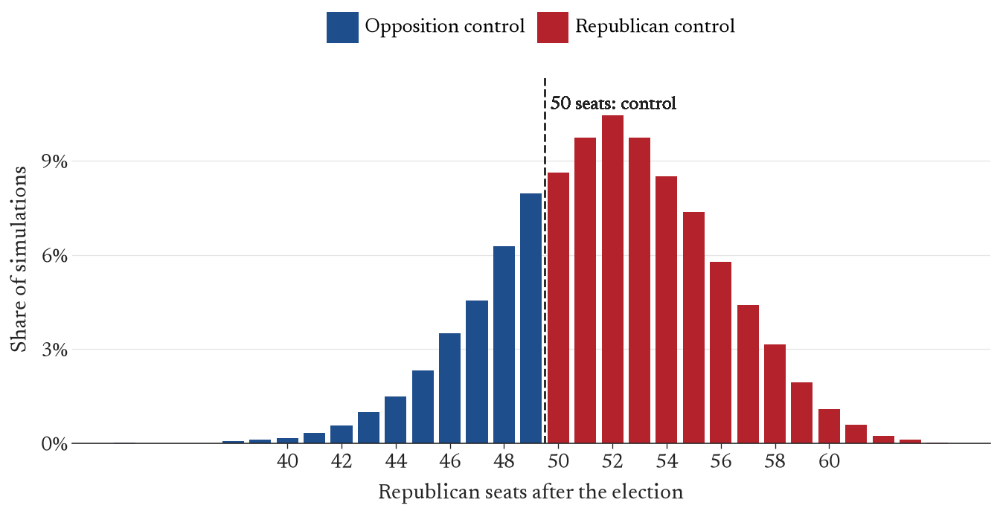
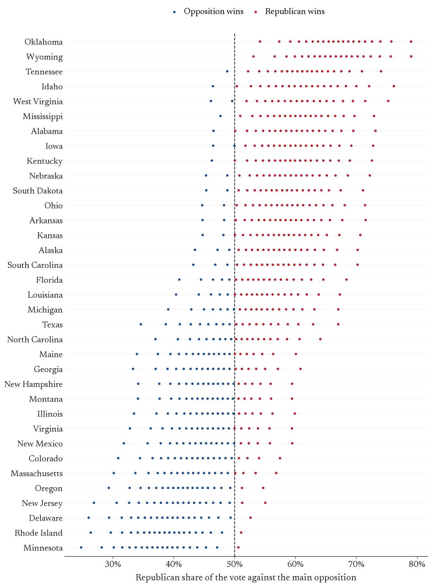
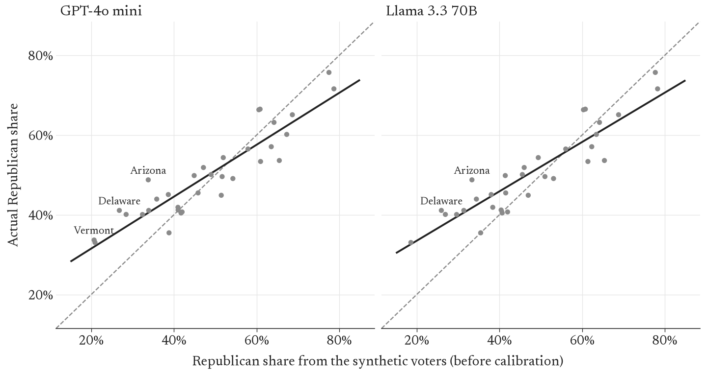
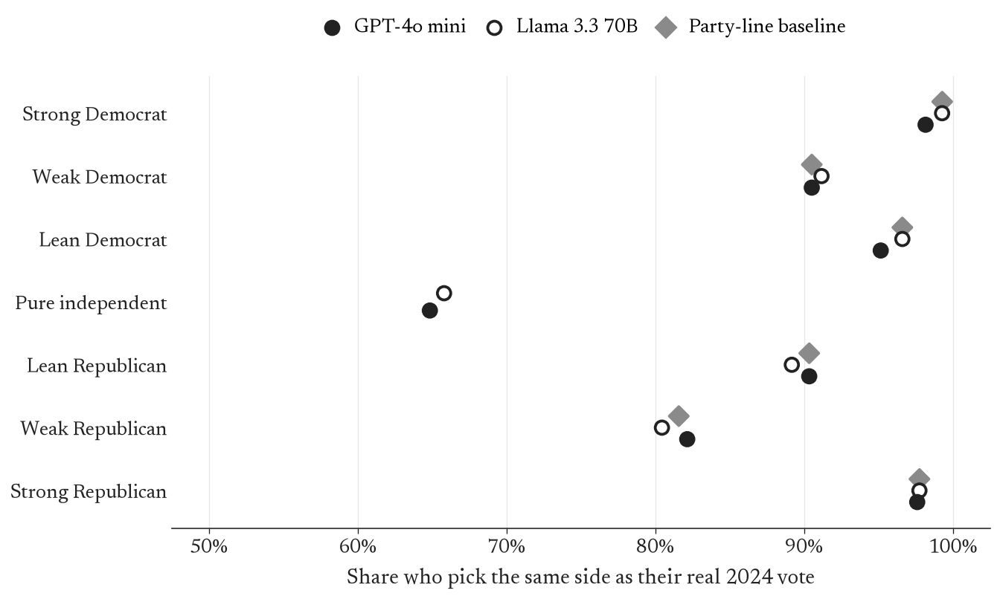
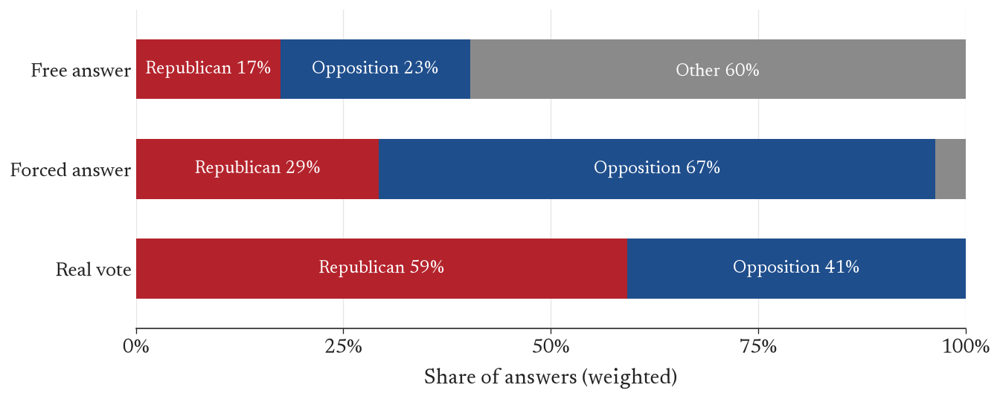
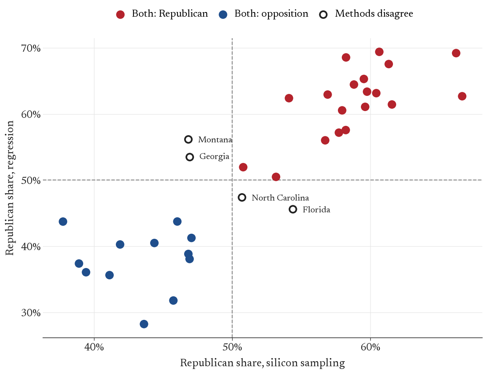
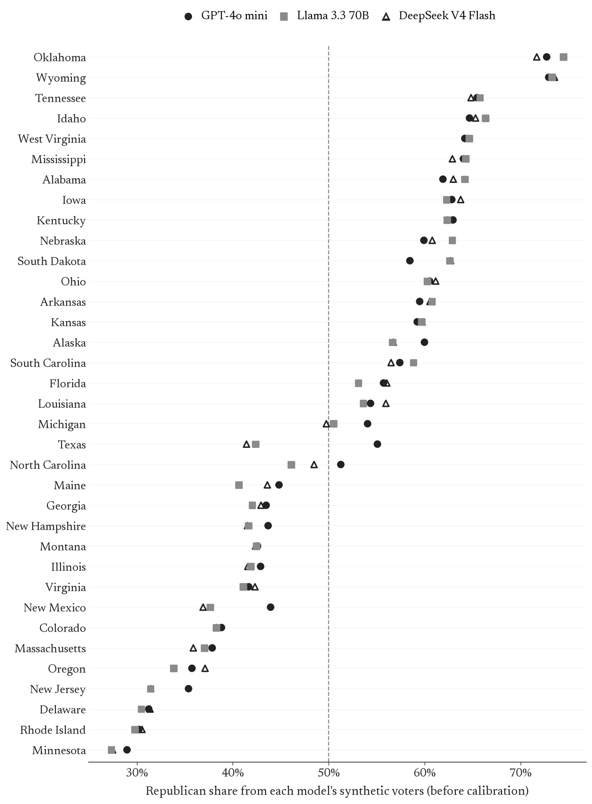

Synthetic Voters Give Republicans a 72% Chance of Keeping the Senate in 2026
A forecast of the 35 U.S. Senate races of 2026 built from synthetic survey responses: real voters’ profiles, answered by large language models
Opening paragraph (2 to 3 sentences): what this page is and that every “voter” is synthetic. Then the headline: Republicans keep the Senate in 72% of 10,000 simulated elections, median 52 Republican seats (80% interval 47 to 57). Republicans are favoured in 21 of 35 races.
The forecast
Read the seat chart for the reader: probability of control, the most likely outcomes, how wide the spread is and why (the national error is shared by every state, so states move together).

How to read the dot plot (count the dots on each side of 50%). Name the closest races: Texas, North Carolina, Michigan, Georgia. Point to the full table in the appendix.
How the forecast is built
CES 2024
real survey respondents
Persona
first-person backstory plus the 2026 ballot
3 LLMs
5 answers each
Weights
survey weight × midterm turnout (CES 2022)
Calibration
line fitted to the 2024 backtest
Simulation
10,000 elections
One short paragraph per step, in order: (1) personas from real CES 2024 respondents (Kuriwaki 2025); (2) the prompt, following Argyle et al. (2023) and Bisbee et al. (2024); (3) three models through OpenRouter, five answers each at temperature 1; (4) weights: survey weight times midterm turnout estimated from CES 2022; (5) calibration with the 2024 line; (6) the simulation, with its four sources of uncertainty (national swing of 3 points, an assumption; state error of 4.7 points, measured leave-one-out; which model; sampling). Ballots from Wikipedia contributors (2026b).
System: You will be given a description of a person. Answer from this person’s perspective, using only knowledge about politics that they would have.
User: I am a 44-year-old white woman living in Ohio. My highest level of education is a high school diploma. My family income is between $60,000 and $70,000 a year. In politics, I consider myself an independent who does not lean toward either party. I would describe my political views as very conservative. I never attend religious services. I follow what’s going on in government and public affairs hardly at all.
It is November 2026. In this year’s midterm U.S. Senate special election in Ohio, the main candidates are a Republican and a Democrat. I will vote for …
Reply with exactly one of: Republican, Democrat, Other, Would not vote. No other text.One sentence introducing the prompt above (a real Ohio persona, shown exactly as sent). Mention the forced-choice follow-up for pure independents (section 4).
Does it work? The 2024 backtest
We ran the same pipeline on 2024, when the answers are known: 4,833 personas in 33 races, with models whose knowledge ends before that election. Before calibration the models are too Democratic (bias 1.6 points for GPT-4o mini, 3.3 for Llama) and too extreme: the calibration slopes are 0.65 and 0.62, so real results are about two thirds as lopsided as the synthetic ones. Link to Bisbee et al. (2024).


The key finding at the individual level: for partisans the models are no better than knowing party identification (about 94% for both models and the baseline on the same people). Pure independents are where the models are weakest (about 65%), as Argyle et al. (2023) also found.
The independents problem

Asked freely, the models give 60% of pure independents’ answers to “Other”. Forced to choose, they send them to the opposition (67%), while the same people reported voting 59% Republican. Explain why we used the forced choice anyway and that it is the same in 2024 and 2026. Connect to mode collapse in Heath and Alexander (2026).
Second opinions
A regression forecast
Two or three sentences on the regression: a ridge regression of each state’s Senate vote on its lagged demographics and partisanship, 2014 to 2024, checked against certified results. The full write-up and code are in the repository (paper/_regression.qmd, scripts/05-regression.py). The two methods name the same winner in 31 of 35 races.

| Method | Average miss (points) | Winners called |
|---|---|---|
| Regression (2024 held out) | 5.6 | 29 of 33 |
| Silicon sampling, GPT-4o mini (raw) | 5.7 | 28 of 33 |
| Silicon sampling, Llama 3.3 70B (raw) | 6.4 | 28 of 33 |
Do the models agree?

What the comparison shows: the three models land close together, and DeepSeek is more Democratic in most competitive races. What that might mean (it knows the 2026 political environment, the older models do not).
Uncertainty, costs and limits
| Run | Models | Replies | Cost (US$) |
|---|---|---|---|
| 2024 backtest | 2 | 48,330 | 1.43 |
| 2024 forced choice (pure independents) | 2 | 7,110 | 0.22 |
| 2026 forecast (first run) | 3 | 77,595 | 2.17 |
| 2026 DeepSeek rerun, reasoning off | 1 | 25,865 | 0.34 |
| 2026 forced choice (pure independents) | 3 | 10,380 | 0.27 |
| Total | 169,280 | 4.43 |
Discussion, connecting to the literature: Argyle et al. (2023) (algorithmic fidelity; independents), Bisbee et al. (2024) (too little variance, exaggerated differences: our slope of about 0.63), Heath and Alexander (2026) (mode collapse; our “Other” answers), Gelman et al. (2020) (correlated errors, the national swing as an assumption, rounding probabilities). Limits: one calibration election, from a presidential year; the 3-point national swing is assumed; candidates are described by party only; no 2026 survey; three-way races (Maine 2024, Montana and Mississippi 2026) are measured against the combined opposition. Where the forecast disagrees with expert ratings (Massachusetts, Illinois, Michigan, Ohio, Nebraska, Alaska) and why. Total cost: US$4.43.
Appendix: the full forecast
| State | Republican | Main opponent | Median R share | 80% interval | P(Republican wins) |
|---|---|---|---|---|---|
| Oklahoma | Kevin Hern | N'Kiyla Jasmine Thomas (D) | 67% | 58–75% | >99% |
| Wyoming | Harriet Hageman | James Byrd (D) | 66% | 58–75% | 99% |
| Tennessee | Bill Hagerty | Marquita Bradshaw (D) | 62% | 53–70% | 96% |
| Mississippi | Cindy Hyde-Smith | Scott Colom (D) | 60% | 52–69% | 95% |
| Idaho | Jim Risch | Todd Achilles (I) | 61% | 52–71% | 93% |
| Alabama | Barry Moore | Everett Wess (D) | 60% | 51–68% | 93% |
| Kentucky | Andy Barr | Charles Booker (D) | 60% | 51–68% | 93% |
| Iowa | Ashley Hinson | Josh Turek (D) | 60% | 51–68% | 92% |
| West Virginia | Shelley Moore Capito | Rachel Fetty Anderson (D) | 61% | 51–70% | 92% |
| Nebraska | Pete Ricketts | Dan Osborn (I) | 59% | 50–68% | 90% |
| South Dakota | Mike Rounds | Brian Bengs (I) | 58% | 50–66% | 90% |
| Ohio | Jon Husted | Sherrod Brown (D) | 58% | 49–67% | 89% |
| Arkansas | Tom Cotton | Hallie Shoffner (D) | 58% | 49–67% | 88% |
| Kansas | Roger Marshall | Adam Hamilton (D) | 58% | 49–66% | 88% |
| Alaska | Dan Sullivan | Mary Peltola (D) | 57% | 48–66% | 85% |
| South Carolina | Darline Graham | Annie Andrews (D) | 57% | 48–65% | 84% |
| Florida | Ashley Moody | Angie Nixon (D) | 54% | 46–64% | 74% |
| Louisiana | Julia Letlow | Jamie Davis (D) | 54% | 45–63% | 73% |
| Michigan | Mike Rogers | Abdul El-Sayed (D) | 53% | 44–62% | 67% |
| North Carolina | Michael Whatley | Roy Cooper (D) | 51% | 42–60% | 54% |
| Texas | Ken Paxton | James Talarico (D) | 51% | 40–62% | 54% |
| Georgia | Mike Collins | Jon Ossoff (D) | 47% | 38–56% | 33% |
| Maine | Susan Collins | Troy Jackson (D) | 47% | 39–55% | 33% |
| New Hampshire | John E. Sununu | Chris Pappas (D) | 47% | 39–55% | 32% |
| Illinois | Don Tracy | Juliana Stratton (D) | 47% | 38–55% | 32% |
| Montana | Kurt Alme | Seth Bodnar (I) | 47% | 39–55% | 31% |
| Virginia | Bert Mizusawa | Mark Warner (D) | 46% | 37–55% | 28% |
| New Mexico | Larry Marker | Ben Ray Lujan (D) | 46% | 37–55% | 27% |
| Colorado | Mark Baisley | John Hickenlooper (D) | 44% | 36–53% | 20% |
| Massachusetts | John Deaton | Ed Markey (D) | 44% | 35–52% | 18% |
| Oregon | David Brock Smith | Jeff Merkley (D) | 42% | 34–50% | 11% |
| New Jersey | Justin Murphy | Cory Booker (D) | 41% | 32–50% | 10% |
| Delaware | Michael Katz | Chris Coons (D) | 39% | 31–48% | 6% |
| Rhode Island | Raymond McKay | Jack Reed (D) | 39% | 31–47% | 4% |
| Minnesota | Michele Tafoya | Peggy Flanagan (D) | 38% | 29–46% | 3% |
Software and data
Analysis in Python (Python Software Foundation 2025) with uv (Astral 2025), Polars (Vink et al. 2025), pandas (The pandas development team 2025), NumPy (Harris et al. 2020), PyArrow (Apache Software Foundation 2025), scikit-learn (Pedregosa et al. 2011), plotnine (Kibirige et al. 2025) and Matplotlib (Hunter 2007); site built with Quarto (Allaire et al. 2025) and set in Newsreader (Production Type 2020). Models: GPT-4o mini (OpenAI 2024), Llama 3.3 70B (Meta 2024) and DeepSeek V4 Flash (DeepSeek-AI 2026) through OpenRouter (OpenRouter 2026). Survey data from the Cumulative CES (Kuriwaki 2025); candidates and results from Wikipedia contributors (2026b) and Wikipedia contributors (2026a).
References
Allaire, J. J., Charles Teague, Carlos Scheidegger, Yihui Xie, and Christophe Dervieux. 2025. Quarto. https://doi.org/10.5281/zenodo.5960048.
Apache Software Foundation. 2025. Apache Arrow and PyArrow. https://arrow.apache.org/.
Argyle, Lisa P., Ethan C. Busby, Nancy Fulda, Joshua R. Gubler, Christopher Rytting, and David Wingate. 2023. “Out of One, Many: Using Language Models to Simulate Human Samples.” Political Analysis 31 (3): 337–51. https://doi.org/10.1017/pan.2023.2.
Astral. 2025. uv: An Extremely Fast Python Package and Project Manager. https://docs.astral.sh/uv/.
Bisbee, James, Joshua D. Clinton, Cassy Dorff, Brenton Kenkel, and Jennifer M. Larson. 2024. “Synthetic Replacements for Human Survey Data? The Perils of Large Language Models.” Political Analysis 32 (4): 401–16. https://doi.org/10.1017/pan.2024.5.
DeepSeek-AI. 2026. DeepSeek-V4: Towards Highly Efficient Million-Token Context Intelligence.
Gelman, Andrew, Jessica Hullman, Christopher Wlezien, and George Elliott Morris. 2020. “Information, Incentives, and Goals in Election Forecasts.” Judgment and Decision Making 15 (5): 863–80. https://doi.org/10.1017/S1930297500007981.
Harris, Charles R., K. Jarrod Millman, Stéfan J. van der Walt, et al. 2020. “Array Programming with NumPy.” Nature 585: 357–62. https://doi.org/10.1038/s41586-020-2649-2.
Heath, Oscar, and Rohan Alexander. 2026. Correcting Mode Collapse in Silicon Sampling with Semantic Similarity Rating. https://arxiv.org/abs/2607.28550.
Hunter, John D. 2007. “Matplotlib: A 2D Graphics Environment.” Computing in Science & Engineering 9 (3): 90–95. https://doi.org/10.1109/MCSE.2007.55.
Kay, Matthew, Tara Kola, Jessica R. Hullman, and Sean A. Munson. 2016. “When (Ish) Is My Bus? User-Centered Visualizations of Uncertainty in Everyday, Mobile Predictive Systems.” Proceedings of the 2016 CHI Conference on Human Factors in Computing Systems, 5092–103. https://doi.org/10.1145/2858036.2858558.
Kuriwaki, Shiro. 2025. Cumulative CES Common Content. Harvard Dataverse. https://doi.org/10.7910/DVN/II2DB6.
Meta. 2024. Llama 3.3 70B Instruct. https://www.llama.com.
OpenAI. 2024. GPT-4o mini. https://openai.com.
OpenRouter. 2026. OpenRouter: A Unified Interface for LLMs. https://openrouter.ai.
Pedregosa, Fabian et al. 2011. “Scikit-learn: Machine Learning in Python.” Journal of Machine Learning Research 12: 2825–30.
Production Type. 2020. Newsreader. https://github.com/productiontype/Newsreader.
Python Software Foundation. 2025. Python: A Dynamic, Open Source Programming Language. https://www.python.org/.
The pandas development team. 2025. pandas-dev/pandas: Pandas. https://doi.org/10.5281/zenodo.3509134.
Wikipedia contributors. 2026a. 2024 United States Senate elections. https://en.wikipedia.org/wiki/2024_United_States_Senate_elections.
Wikipedia contributors. 2026b. 2026 United States Senate elections. https://en.wikipedia.org/wiki/2026_United_States_Senate_elections.